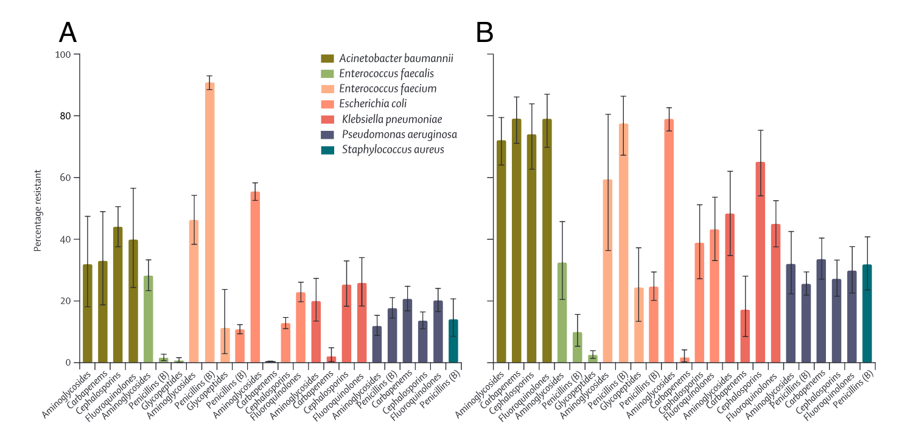
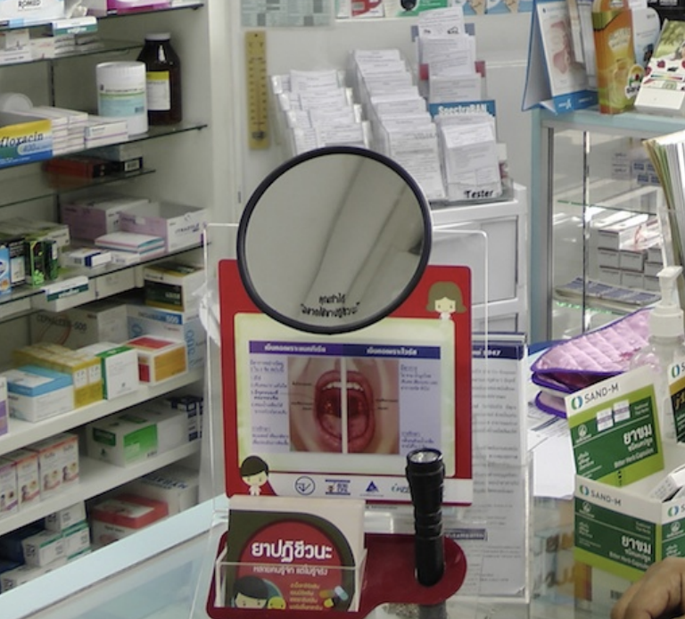

- A brief history of antimicrobial resistance (AMR)
- Global response to antimicrobial resistance
- What are the drivers of antimicrobial resistance?
- AMR in Low-Middle Income Countries (LMICs)
- AMR situation in Italy
- The global future of AMR
- One-Health Perspective of AMR
- Cross-border spread of AMR
- Summary
- Lecture Slides
- References
AMR in Low-Middle Income Countries (LMICs)
AMR is a global problem, but its prevalence across the globe varies with antibiotic consumption, access to clean water and adequate sanitation, vaccination coverage, and access to quality healthcare. The latest WHO report, based on AMR data from 66 countries, illustrates an alarming picture of the global status of AMR as an increasing number of countries are now reporting high rates of resistance among antimicrobials used to treat common infections.
There are considerable knowledge gaps regarding AMR prevalence in LMICs that lack clinical and laboratory capacity and surveillance infrastructure. A systematic review of 144 16 studies across Africa lacked AMR data for approximately 40% of the African countries. In the Asia and Pacific region, South East Asia is estimated to have the highest risk of AMR emergence and spread, with the highly transferable New Delhi metallo-beta-lactamase-1 (NDM-1) as an example. Furthermore, China and India alone accounted for more than one-third of the global incidence of 17 multidrug-resistant (MDR) tuberculosis.6
COVID-19 has focused global attention on the inequitable access to the tools needed to control the pandemic, with high-income countries (HICs) and low- and middle-income countries (LMICs) at opposite ends of the scale. In the case of antibiotic resistance, a pandemic projected to cause four times more deaths per year than occurred from COVID-19 during 2020, inequity between HICs and LMICs is a major challenge:7
How is LMIC defined? The World Bank defines lower middle income economies as countries where the per capita gross national income (GNI) falls between $1,026 and $3,955. The countries that are part of the upper MIC classification with a GNI that falls between $3,956 and $12,475.
Countries currently included: Afghanistan, Albania, Algeria, Angola, Antigua and Barbuda, Argentina, Armenia, Azerbaijan, Bangladesh, Belarus, Belize, Benin, Bhutan, Bolivia, Bosnia and Herzegovina, Botswana, Brazil, Burkina Faso, Burundi, Cabo Verde, Cambodia, Cameroon, Central African Republic, Chad, China (People’s Republic of), Colombia, Comoros, Democratic Republic of Congo, Congo, Costa Rica, Côte d’Ivoire, Cuba, Djibouti, Dominica, Dominican Republic, Ecuador, Egypt, El Salvador, Equatorial Guinea, Eritrea, Eswatini, Ethiopia, Fiji, Gabon, Gambia, Georgia, Ghana, Grenada, Guatemala, Guinea, Guinea-Bissau, Guyana, Haiti, Honduras, India, Indonesia, Iran, Iraq, Jamaica, Jordan, Kazakhstan, Kenya, Kiribati, Democratic People’s Republic of Korea, Kosovo, Kyrgyzstan, Lao People’s Democratic Republic, Lebanon, Lesotho, Liberia, Libya, North Macedonia, Madagascar, Malawi, Malaysia, Maldives, Mali, Marshall Islands, Mauritania, Mauritius, Mexico, Micronesia, Moldova, Mongolia, Montenegro, Montserrat, Morocco, Mozambique, Myanmar, Namibia, Nauru, Nepal, Nicaragua, Niger, Nigeria, Niue, Pakistan, Palau, Panama, Papua New Guinea, Paraguay, Peru, Philippines, Rwanda, Saint Helena, Samoa, São Tomé and Príncipe, Senegal, Serbia, Sierra Leone, Solomon Islands, Somalia, South Africa, South, Sudan, Sri Lanka, Saint Lucia, Saint Vincent and the Grenadines, Sudan, Suriname, Syrian Arab Republic, Tajikistan, Tanzania, Thailand, Timor-Leste, Togo, Tokelau, Tonga, Tunisia, Turkey, Turkmenistan, Tuvalu, Uganda, Ukraine, Uzbekistan, Vanuatu, Venezuela, Vietnam, Wallis and Futuna, West Bank and Gaza Strip, Yemen, Zambia, Zimbabwe
LMICs are particularly susceptible to the emergence and rapid spread of AMR for several reasons:
- High population density
- Lack of access to clean water, suboptimal sewage systems, poor sanitation
- Poor healthcare infection control practices
- Increasing consumption of antimicrobials in humans
- Availability and distribution of poor-quality (counterfeit) medicines
- Lack of regulation on antimicrobial use in farming, and pharmaceutical industry pollution
The health and economic impact of AMR is also more severe and longer lasting in LMICs versus HICs. AMR is generally associated with:
Increased mortality and health costs
Antibiotics effective against AMR are more expensive and not affordable for many patients
Increasing use of antibiotics with efficacy against AMR leads to higher resistance to “last-line” antibiotics
In fact, carbapenem consumption is increasing at a rapid pace in poor economies.8

Figure 4. Progress on vaccinations by GDP per capita, circle size represents population. Source: Financial Times
- Lack of access to antibiotics in some poorer countries, a driver of mortality particularly in children under 5 years of age;
- Lack of access to newer, expensive antibiotics needed to treat the increasing toll of MDR and XDR bacterial infections;
- Inequity in ability to provide the basic public health interventions that drive many of the social determinants of infectious diseases in LMICs
The singular effectiveness of access to clean water, sanitation and hygiene, called WASH, in preventing the spread of disease is well understood, yet billions of people around the world still lack access to these necessities.9
- Currently, 2.1 billion people live without access to safe drinking water and 4.5 billion people are without access to adequate sanitation.
- Every day, 1300 children under 5 die from preventable diarrhoeal diseases, including cholera, caused by contaminated water and poor sanitation.
- 1 in 3 healthcare facilities lacks soap and water or hand sanitizer where staff provide patient care. Billions of patients worldwide must rely on these facilities.
- In some countries, up to 90% of women receive routine prophylactic antibiotics during childbirth, highlighting the conditions under which they are delivering their babies and what would cause the inevitability of infection
The cumulative lack of WASH adds up to children and adults not only getting unnecessarily sick—with the associated suffering, medical costs and loss of income or schooling—they are relying on antibiotics to get better.10 The challenge here is that WASH is a public works solution for a public health problem. WASH is not a pill or ‘quick fix’. It requires capital investment, system strengthening, and behaviour change to ensure that clean water and functional toilets are available and utilized day-in and day-out. These issues require a different set of skills than those possessed by medical and public health professionals.
In LMICs, an estimated 670 million people still practice open defaecation in 2017, and only one in three people have access to safe drinking water, resulting in high rates of diarrheal disease and equally large amounts of inappropriate antibiotic use.10 According to WHO surveys, vaccination, a cornerstone of infection prevention and reducing the need for antibiotic use, is suboptimal in both HICs and LMICs. In 2019, global third-dose coverage for childhood pneumococcal vaccination in 149 member states was only 48%, and global rotavirus vaccine coverage was estimated at 39%. In South Africa, middle-income country, procures less than 1 million doses of influenza vaccine for its annual influenza season, despite in excess of 10 million people being identified as high-risk for influenza and prioritized for vaccination.
Optimizing infection prevention on farms and making improvements to housing conditions and feed to reduce illness in animals is also critical in food production to offset the need for antibiotic growth promotion or metaphylaxis in food production animals. While there has been progress in the reduction of antibiotic use in farms in the EU and other HICs, attention nor funding for such improvements in LMICs has not even been proposed. “It’s one thing being told to reduce your antibiotic use in food production, it’s another to have the means to do so, even for the most committed resource-poor farmer.
As discussed above, the emergence of antimicrobial resistance (AMR) is a complex phenomenon and is intensified by selective pressure through antibiotic use in humans, animals, and agriculture. The transmission of AMR to humans occurs from contact with animals (including food), other humans, and the environment. Transmission is facilitated by several factors, including high population density, lack of access to clean water, suboptimal sewage systems, poor sanitation, and poor healthcare infection control practices, all of which are more common in LMICs. With the increasing consumption of antimicrobials in humans, lack of regulation on antimicrobial use in farming, and pharmaceutical industry pollution, it may not be surprising that relatively higher levels of AMR among human pathogens are being reported from LMIC.

Figure 5. Global antibiotic use and resistance by income class. (A) High-income countries (HICs); and (B) Low-Middle Income Countries (LMICs).6

Figure 6. Drug resistance index (DRI) across countries. The drug resistance index is a composite score derived by multiplying the proportion of each antibiotic used to treat a set of pathogens by the proportion of all isolates that were resistant to that drug. Blue bars represent high-income countries (HICs) dark blue bars represent low-middle income countries (LMICs).6
The international focus on awareness, surveillance, infection prevention, stewardship and research and development (R&D) of new antibiotics is actually widening the equity gap by pouring millions of dollars into R&D of new antibiotics and surveillance systems, while the intervention that could benefit LMICs the most, infection prevention, has received a relatively few resources.
What are the possible solutions? Recently COVID-19 has refocused attention that in infectious diseases The Access to COVID-19 Tools (ACT)-Accelerator that we will discuss in Model 2 has shown that financial contributions from HICs to a LMIC-pool can improve equitable access to diagnostics, therapeutics and vaccines, but it is conceivable that the same model could be broadened to encompass tools that would support major social change for AMR.
How can the effectiveness of antimicrobials be preserved?
Strategies for the prevention and containment of AMR often focus on:
- Improvement of infection diagnosis and prescription practices (antimicrobial stewardship)
- Reduction of antimicrobial use in agriculture and environmental exposure in general
- Development of new antimicrobials
- Access to essential medicines of assured quality
- Improvement of AMR surveillance
Antimicrobial stewardship is a coordinated program that promotes and focuses on the appropriate use of antimicrobials and strategies to improve patient outcomes, reduces antimicrobial resistance, and decrease the spread of infections caused by multidrug-resistant organisms. These programs may be implemented through the use of institution-specific treatment guidelines and an antibiotic stewardship team (typically infectious diseases physicians with a clinical pharmacist) who carry out full-time activities to promote and encourage appropriate antibiotic use. While these programs have been shown to be successful, many gaps remain in the knowledge of how to optimally design and sustain stewardship programs in the hospital, and such programs are rarely implemented in community settings where most antibiotic consumption takes place.


Figure 6. Examples of antimicrobial stewardship efforts and outcomes. Source: ECDC
Since 2017, the WHO has published the AWaRe Antibiotic Classification List to support antibiotic stewardship efforts at local, national and global levels. The classification takes into account the impact of different antibiotics and antibiotic classes on antimicrobial resistance, to emphasize the importance of their appropriate use.
Antibiotics are classified into three groups: Access, Watch and Reserve.
- The “Access” group includes antibiotics that have activity against a wide range of commonly encountered susceptible pathogens while also showing lower resistance potential than antibiotics in the other groups. Selected Access group antibiotics are recommended as essential first or second choice empiric treatment options for infectious syndromes reviewed by the Essential Medicines List (EML) Expert Committee and are listed as individual medicines on the Model Lists of Essential Medicines to improve access and promote appropriate use.
- The “Watch” group includes antibiotic classes that have higher resistance potential and includes most of the highest priority agents among the Critically Important Antimicrobials for Human Medicine1 and/or antibiotics that are at relatively high risk of selection of bacterial resistance. These medicines should be prioritized as key targets of stewardship programs and monitoring. Selected Watch group antibiotics are recommended as essential first or second choice empiric treatment options for a limited number of specific infectious syndromes and are listed as individual medicines on the WHO Model Lists of Essential Medicines.
- The “Reserve” group includes includes antibiotics and antibiotic classes that should be reserved for treatment of confirmed or suspected infections due to multi-drug-resistant organisms. Reserve group antibiotics should be treated as “last resort” options.
- Selected Reserve group antibiotics are listed as individual medicines on the WHO Model Lists of Essential Medicines when they have a favourable risk-benefit profile and proven activity against “Critical Priority” or “High Priority” pathogens identified by the WHO Priority Pathogens List1, notably carbapenem resistant Enterobacteriaceae. These antibiotics should be accessible, but their use should be tailored to highly specific patients and settings, when all alternatives have failed or are not suitable. These medicines could be protected and prioritized as key targets of national and international stewardship programs involving monitoring and utilization reporting, to preserve their effectiveness.
- Finally, the list includes “not-recommended” antibiotics- fixed-dose combinations of multiple broad-spectrum antibiotics listed here is not evidence-based, nor recommended in high-quality international guidelines. WHO does not recommend their use in clinical practice.
The 2021 update of the AWaRe classification includes an additional 78 antibiotics not previously classified, bringing the total to 258.
The AWaRe tool is useful for monitoring antibiotic consumption, defining targets and monitoring the effects of stewardship policies that aim to optimize antibiotic use and curb antimicrobial resistance. The WHO 13th General Programme of Work 2019–2023 includes a country-level target of at least 60% of total antibiotic consumption being Access group antibiotics
Case study: A successful national antibiotic stewardship program in a LMIC
The Antibiotics Smart Use (ASU) program in Thailand was an implementation research project comprised of three phases:
- Implementation of behavior change interventions
- Examination of the feasibility of scale up; and
- Identification of mechanisms for sustainability
The guiding principle of the ASU program is that antibiotics should not be used to treat non-bacterial infections. ASU started by trying to reduce unnecessary antibiotic use in patients with 3 conditions: upper respiratory tract infections, especially common colds with sore throat; acute diarrhea and simple wounds.
The program focused on simple measures, compatibility with the providers’ values, advantages with respect to current practice; performing testable interventions, and transparency.
In the beginning, ASU consisted of a network of researchers from Thailand’s Ministry of Public Health and pharmacists and doctors from Srinakharinwirot University and Chulalongkorn University.
In phase 1 (2007- 2008) they piloted educational and training reforms to improve prescribing in 10 hospitals and 87 primary health centres in one province. Antibiotic prescription, provider attitudes of effectiveness and knowledge of antibiotics, non-prescription rates in case of non-bacterial infections, and patient health and satisfaction were monitored.
In phase 2 (2008-2009) the same indicators were then used to scale up the program to three provinces and two hospital networks, counting to 44 hospitals and 621 primary health care centres.
The 3rd phase (2010 – Present) is focusing on long-term sustainability and scale up of ASU – initially to 22 hospital networks in 15 provinces, and then subsequently across the entire country.
| Characteristics | Phase 1 (1 year) |
Phase 2 (1 year, 3 months) |
Phase 3, transition period |
|---|---|---|---|
| Goals | Test effectiveness of ASU in changing antibiotic prescription behavior | Test feasibility of scaling up ASU model | Strengthen networks, assess scaling up mechanisms |
| Target | 1 province | 3 provinces and 2 networks of public and private hospitals | 22 hospital networks in 15 provinces |
| Funding agencies |
WHO, Thai FDA | HSRI, NHSO, Thai FDA | DSMDC, Thai FDA |
| Coordinating agencies |
Thai FDA | Thai FDA | DSMDC, Thai FDA, IHPP |
| Budget spending | US$ 33,000 | US$ 73,000 | US$ 123,000 |
| Spillover effect | No | Yes | Yes |
The program also had many simple but innovative community health interventions. For example, holding up a simple concave mirror to consumers trying to buy antibiotics for treating the common cold and cough was part of a new initiative in Thailand by community pharmacists to lower consumption of antibiotics.

Figure 7. Mirror toolkit for patients to self-assess their sore throat symptoms in Thai Pharmacies
After completion of Phases 1-2, the following results were noted:
- Positive effects on reducing antibiotic prescribing. Antibiotic use was reduced by 18-46%
- The percentage of patients who did not receive antibiotics increased by 29.1%, whereas there was no change in the control groups who were not involved in the ASU program
- Patient health and satisfaction rates were high, 96%-99.3% of patients surveyed who did not refeive antibiotics recovered and felt better within 7-10 days after their medical visits
- Success in scaling up. The number of hospitals adopting ASU increased from 44 hospitals (2008) to more than 600 hospitals (2010).
The ASU project is having an impact beyond the borders of Thailand too and is now seen as a model for replication in other parts of south-east Asia with interest elicited from as far away as Africa and Latin America. Read more about the ASU project at react.org